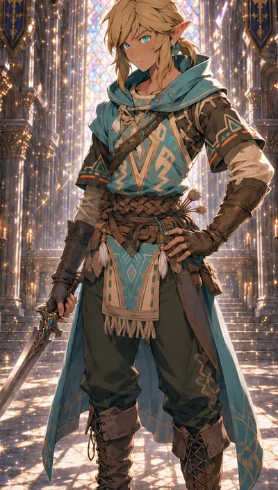
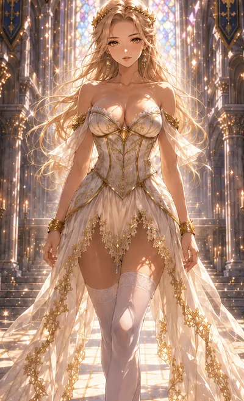

World lore
Ancient Colossals
Guardians and Titans older than kingdoms lie dormant in stone and root. At the Grand Festival of Elindor, a Guardian wakes through Elyza. The sky turns red, and the Titans stir.
A Chronicle Clash adventure
Explore connected areas of a living world.
Early beta. Models, art and features are still in progress.
The world

World lore
Guardians and Titans older than kingdoms lie dormant in stone and root. At the Grand Festival of Elindor, a Guardian wakes through Elyza. The sky turns red, and the Titans stir.

World concept · not in the beta
Where the light thins, the Shadow host gathers behind champions like the Obsidian Dreadknight. Its full story is still being written.
Six continents wait beyond the first road: Elindor, Myrath, Solvara, Vharos, the Frostcrown Isles and the Siri Isles. Open the world atlas (opens in a new tab) ↗
The heroes

Key NPC · Elf
A wandering elf youth whose quiet courage carries him farther than he knows. Untested in the eyes of kings, he moves with instinct, kindness and resolve, and becomes a steady light for others.
Lance never speaks. He lets his choices answer.

Key NPC · Princess
A radiant princess chosen by the light. Her kind heart and unwavering faith heal wounds unseen, and through her the Guardian's power awakens in those who fight for what is right.
“Where grace stands, hope still shines.”
Early beta
Both run right in your browser, on phone or computer. Nothing to install.

Playable now
The Sky Citadel: sword combat, parries and stealth on the way to the Dark Knight, plus the Forest Escape.
Launch Gameplay Test
Playable now
Villagers with daily routines who stop to react when you walk up. Tap Talk to hold a real conversation by voice or text.
Launch Village SimulationAI conversations are in testing; a villager may answer with a set line.
Beta footage. Characters use placeholder models for now.